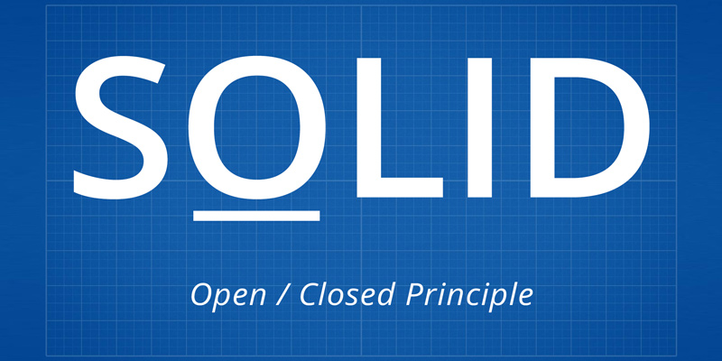
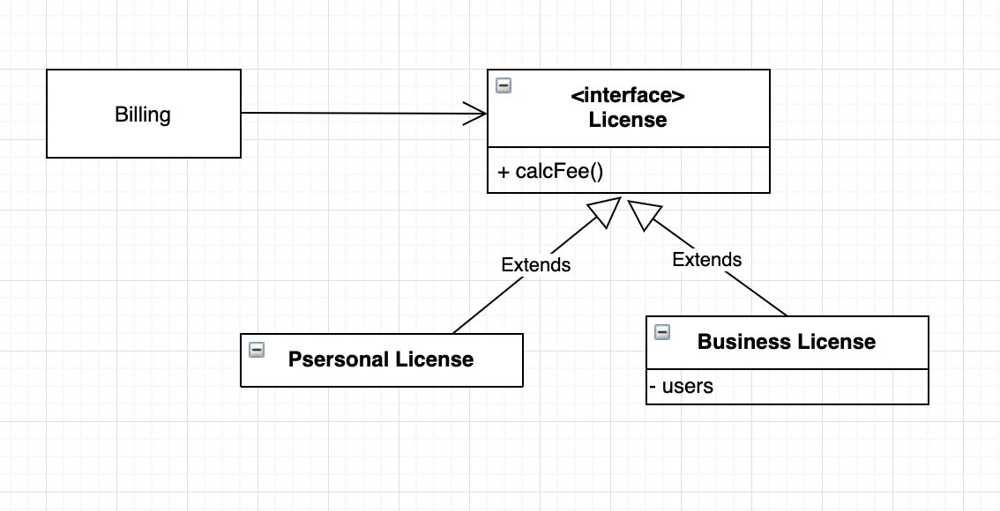
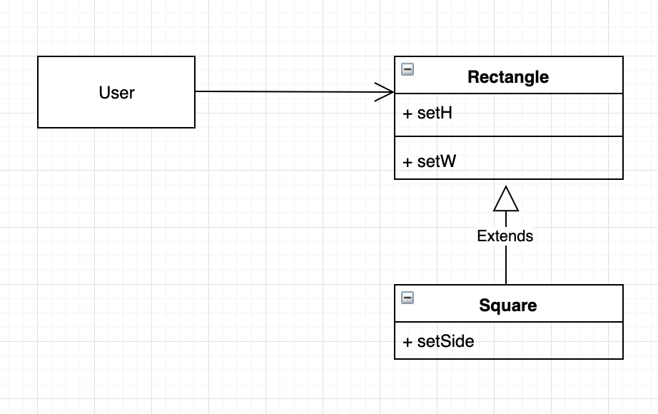
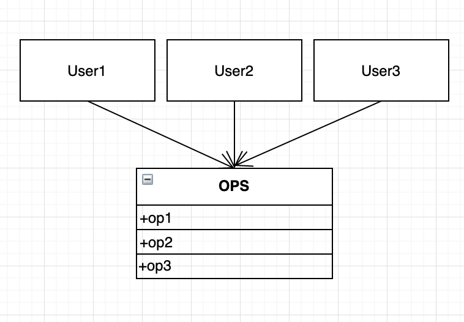
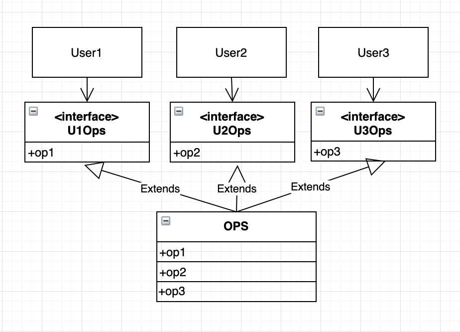

OCP : 개방 폐쇄 원칙

소프트웨어 개체는 확장에는 열려 있어야 하고, 변경에는 닫혀 있어야 한다.
즉, 기존의 코드를 변경하지 않으면서 기능을 추가할 수 있도록 설계가 되어야 한다는 의미이다. OPC는 시스템의 아키텍처를 떠받치는 원동력 중 하나다.
OCP 의 목표를 달성하기 위해서는 시스템을 컴포넌트 단위로 분리하고, 저수준 컴포넌트에서 발생한 변경으로부터 고수준 컴포넌트를 보호 할 수 있는 형태의 의존성 계층 구조가 만들어지도록 해야한다.
더 알아보기 : https://lng1982.tistory.com/124
LSP : 리스코프 치환 원칙

바바라 리스코프는 하위타입을 아래와 같이 정의했다. 이 개념은 리스코프 치환 원칙으로 잘 알려져 있다.
여기서 필요한 것은 다음과 같은 치환 원칙이다. S타입의 객체 o1 각각에 대응하는 T타입 객체 o2가 있고, T타입을 이용해서 정의한 모든 프로그램 P 에서 o2의 자리에 o1을 치환하더라도 P의 행위가 변하지 않는다면, S는 T의 하위 타입이다.
상속을 사용하도록 가이드 하기

LSP를 준수하려면 상속을 사용해보자.
라이센스 비용을 계산하는 Billing 애플리케이션이 있다. Billing 애플리케이션의 행위가 License 하위의 타입 중 무엇을 사용하는지에 전혀 의존하지 않으며, 이들 하위 타입은 모두 License 타입을 치환할 수 있는 것을 볼 수 있다.
정사각형/직사각형 문제
LSP 를 위반하는 전형적인 문제로 유명한 정사각형/직사각형 문제이다.

Square 은 Rectangle의 하위타입으로 적합하지 않음을 보여준다. Rectangle 의 높이와 너비는 서로 독립적으로 변경될 수 있는 반면, Square의 높이와 너비는 반드시 함께 변경되기 때문이다.
LSP 와 아키텍처
초창기 LSP 는 상속을 사용하도록 가이드 하는 방법으로 간주되었으나, 시간이 지나면서 인터페이스와 구현체에도 적용되는 더 광범위한 소프트웨어 설계원칙으로 변모해 왔다.
LSP는 아키텍처 수준까지 확장 될 수 있고, 반드시 확장해야만 한다.
ISP : 인터페이스 분리 원칙
예제로 살펴보기

다수의 사용자가 OPS 클래스의 오퍼레이션을 사용한다고 가정해보자.
User1은 op1, User2는 op2, User3는 op3만을 사용한다. User1에서는 전혀 사용하지도 않는 op2와 op3 메서드에 의존하게 된다.
이러한 의존성으로 op2의 소스코드가 변경되면 User1도 다시 컴파일 한 후 새로 배포해야 한다.

이러한 문제는 오퍼레이션을 인터페이스 단위로 분리하면 해결할 수 있다.
User1의 소스코드는 U1Ops와 op1에는 의존하지만 OPS에는 의존하지 않게 된다. 따라서 OPS에서 발생한 변경이 User1과는 전혀 관계 없는 변경이 된다.
ISP 란
어떤 클래스를 인터페이스를 사용하여 구현할 때 사용하지 않는 메소드를 가지고 있는 인터페이스에 의존하게 하지 말아야 한다.
따라서 클래스가 사용하는 기능만 제공하도록 인터페이스를 분리하는 것이 중요하다.
‘하나의 일반적인 인터페이스보다는, 여러 개의 구체적인 인터페이스가 낫다.’
항상 최소한만 의존하도록 설계하자.
불필요한 짐을 실은 무언가에 의존하면 예상치도 못한 문제에 빠질 수 있다.
불필요한 기능을 포함한 것에 의존하면, 실제 상관 없는 부분이 변경되어도 재배포를 해야하는 상황이 된다.
하나의 거대한 인터페이스 보다는, 여러 개의 구체적인 인터페이스가 낫다.